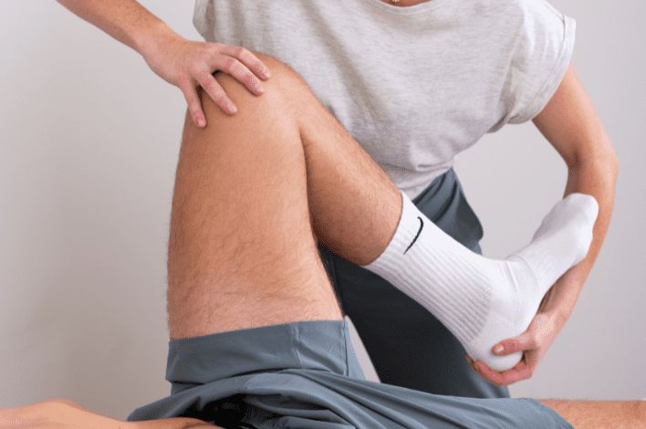

Physiotherapy
What does a physiotherapist?
Physiotherapy aims to restore movement issues, using manual techniques and exercise therapy to facilitate rapid physical recovery. The goal is to enhance your quality of life by increasing mobility, reducing pain, and promoting recovery. We begin with a conversation and a physical examination, this to create a treatment plan together where the active participation of the patient is crucial for long- term success.


What can you see a physiotherapist for?
- Tendon injuries and overuse injuries (e.g., Achilles tendon, patellar tendon, plantar fasciitis)
- Muscle tears (e.g., calf muscles, hamstrings, quadriceps)
- Sprains or ligament injuries (e.g., ankle sprain)
- Fractures (e.g., wrist fracture)
- Knee problems (e.g., meniscus issues)
- Shoulder complaints (e.g., frozen shoulder, rotator cuff problems)
- Pain and stiffness due to osteoarthritis and rheumatic conditions
- Prevention
- Gait rehabilitation
- Fall prevention for the elderly